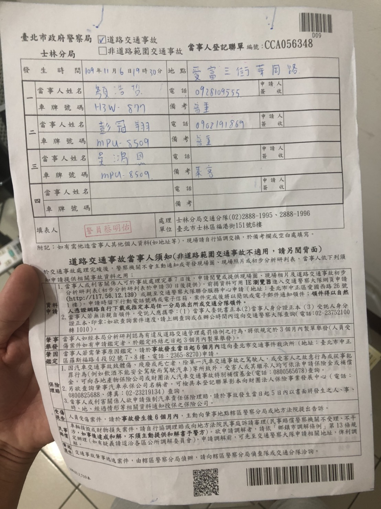
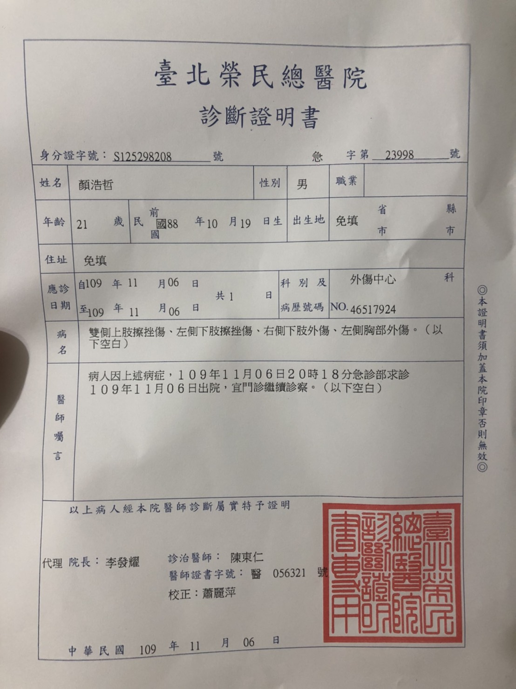
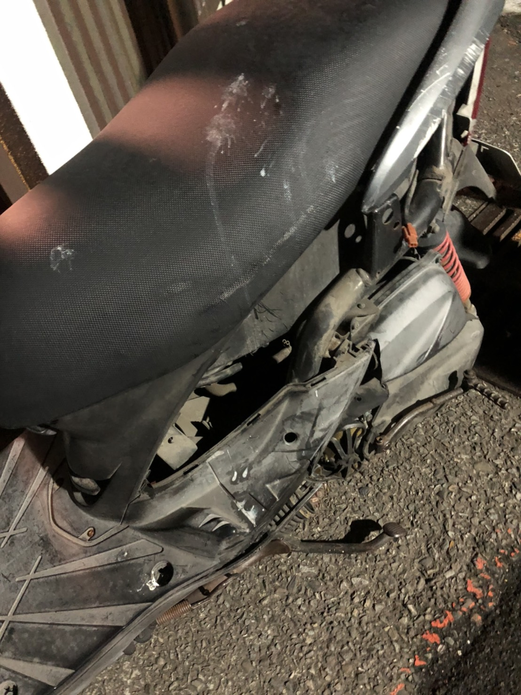
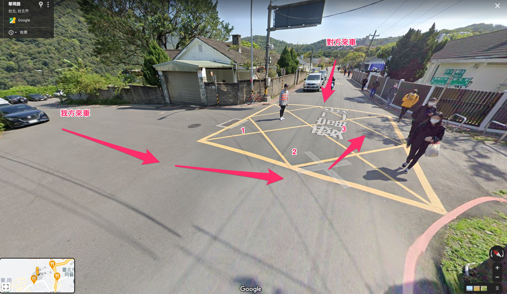
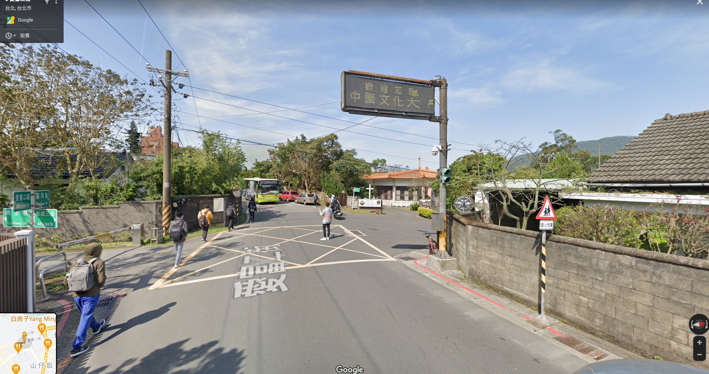

James禍調解
1 相關案例
2 調解書
3 登記資料
3.1 登記聯單
- 士林分局
- 單號 CCA056348
- 警員 蔡明佑 02-28881995
3.2 地點
愛富三街/華岡路口
3.3 雙方
3.3.1 我方
- 顏浩哲 0928109555
- 普通重機: H3W-877
3.3.2 對方
- 彭冠翔 0902191869
- 普通重機: MPU-8509
3.3.3 報案登記

Figure 1: 報案登記
James驗傷單

車損

4 現場狀況
2020年11月 6日晚 7:30分
路口無號誌、無待轉

路口速限30

5 法源
5.1 肇責分攤處理原則 - 中華民國產物保險商業同業公會汽車險委員會編製
5.1.1 15.路口無號誌且無幹支道之分者，轉彎車與直行車肇責分攤情形。
- 轉彎車未讓直行車先行者，即未達中心線搶先左轉時，則轉彎車負100%肇責，直行車無肇責。
- 直行車路口未減速或超速時，則轉彎車負7 0 %，直行車負30%。(互賠)
- 直行車未讓已轉彎車先行時，直行車負100%肇責。
5.2 道路交通安全規則第102條第1項第2款
- 行至無號誌或號誌故障而無交通指揮人員指揮之交岔路口，支線道車應暫停讓幹線道車先行。
- 未設標誌、標線或號誌劃分幹、支線道者，少線道車應暫停讓多線道車先行；
- 車道數相同時，轉彎車應暫停讓直行車先行；
5.3 依道路交通安全規則第94條第3項
汽車行駛時，駕駛人應注意車前狀況及兩車併行之間隔，並隨時採取必要之安全措施。」此一「注意車前狀況」之注意義務範圍，
6 如何辯駁
James: 不能說完全沒看到，應該說，以當初車速判斷覺得還很遠，應該
我方騎騎機車行經路口，行至路中心準備左轉時遭對方自左方車道騎乘機車撞上（路口無號誌），對方行至路口並未減速採取必要安全措施(該路段為學區、速限30、路口有「當心兒童」三角警示號誌)，我方則有轉彎車未禮讓直行車的問題。
我方: 違反道路交通安全規則第102條第1項7款規定：「汽車行駛至交岔路口，其行進、轉彎，應依下列規定：七、轉彎車應讓直行車先行。」
對方: 違反道路交通安全規則第93條第1項第2款規定：「行車速度，依速限標誌或標線之規定，無速限標誌或標線者，應依下列規定：
二、行經設有彎道、坡路、狹路、狹橋、隧道、學校、醫院標誌之路段、道路施工路段、泥濘或積水道路、無號誌之交岔路口及其他人車擁擠處所，或因雨霧致視線不清或道路發生臨時障礙，均應減速慢行，作隨時停車之準備。」及第94條第3項規定：「汽車行駛時，駕駛人應注意車前狀況及兩車並行之間隔，並隨時採取必要之安全措施，不得在道路上蛇行，或以其他危險方式駕車。 」
由我方機車左側車身及對方車頭損壞狀況研判，對方當時車速應遠高於路口規定速限，
直行車依規定雖有路權，但「路權」並非絕對不可侵犯之權利，是除有關路權之各項具體規範外，尚有明定駕駛人必須遵守注意車前狀況或兩車併行距離等相關概括規定之必要，且所謂車前狀況亦非僅以駕駛人所遵行之車道為限，尚須擴及視線所及之可能範圍，藉此賦予駕駛人在享有路權之同時，仍應確實注意周遭突發情事與他人行車狀況之義務，促使各類用路人均能妥適採取避免或降低交通往來風險之舉措。
否則倘如本件雖因甲違規左轉，若謂乙逕可不問兩車相距為何或是否確實注意他人行車狀況，徒憑其是時享有路權而率行主張卸免一切責任，實與上述交通安全規則之法律本意有悖。
另依交通部民國100年6月3日交路字第1000032540號函釋：「依道路交通管理處罰條例及道路交通安全規則規定，轉彎車一律須讓直行車先行，此乃因立法院提案之修正說明中，轉彎車是否達中心處之認定，實務上實為困難，多致肇生因搶道而發生事故，原以修正該條例及規則，然事涉肇事責任歸屬之判定，仍須依個案判定。並非轉彎車須負全部責任。」
以本例來說，雖然乙具有路權，但不代表乙就可任意違規，但畢竟乙有路權優勢，所以甲轉彎車未禮讓直行車，會被認定為肇事主因，而乙超速、未注意車前狀況，則會被認定為肇事次因。
6.1 駕駛嚴重超速，又沒注意車前狀況，才會導致這起嚴重車禍?
乙騎在快車道且至路口並未減速採取必要安全措施，甲則是轉彎車未禮讓直行車的問題
6.2 可否證明對方車要右轉？
6.3 刑事訴訟期為六個月，進入司法程序後不能申請車禍鑑定
6.4 車禍七天後可以向承辦車禍案件的警員申請現場圖和照片
6.5 車禍30天後可以申請「初步分析研判表」
7 其他範例
陳春發係菱揚貨運有限公司司機，以駕駛營業大貨曳引車為
業務之人，於民國99年7月25日上午8時17分，駕駛車牌號碼
HR—782號營業大貨曳引車，沿新竹縣竹北市○○路○段由西
往東方向行駛於外側車道，陳君雯則騎乘車牌號碼711─EZK
號普通重型機車後搭載賴詩雲，同向駛於陳春發之營業大貨
曳引車前方。嗣陳君雯因欲左轉文山路往新竹縣芎林方向行
駛，遂減速自外側車道慢慢駛向內側車道，陳春發因認陳君
雯行車速度太慢遂未依規定按鳴喇叭逼迫前車，陳君雯聞聲
後心生緊張，誤認陳春發之營業大貨曳引車係行駛於內側車
道，遂又減速駛往外側車道，惟陳君雯於變換車道時原應注
意右側來車應讓直行車先行，並應注意安全距離，而陳春發
本應注意車前狀況，隨時採取必要安全措施，且當時天氣晴
朗、日間、柏油乾燥路面、無障礙或其他缺陷、視距良好，
依當時情形並無不能注意之情事，陳春發、陳君雯竟均疏於
注意，致陳春發之營業大貨曳引車左側駕駛座踏板處、左前
輪輪軸擦撞陳君雯之機車前檔泥板右側突出處、右側車體蓋
，致陳君雯、賴詩雲均人車倒地，陳君雯受有臉部擦傷、右
手及右手肘挫擦傷、右手小指撕裂傷約2公分、右胸挫傷等
傷害（過失傷害部分業據告訴人陳君雯撤回告訴），賴詩雲
則跌落陳春發之營業大貨曳引車左側車輪中間，遭車輪碾壓
後受有下腹、會陰部及雙大腿壓砸傷併深撕裂傷及出血性休
克、骨盆開放性骨折併大量出血之傷害，賴詩雲經送醫救治
後，仍於99年7 月25日12時50分因出血性休克後心跳停止，
急救無效而宣告不治死亡。經警據報前往處理，陳春發、陳
君雯在場均表明為肇事者而接受調查，始查悉上情。
被告受僱於永淐漁產有限公司，擔任司機，平日以駕駛貨車
載運魚貨為業，為從事駕駛業務之人。其於102 年10月18日
下午某時，駕駛車牌號碼000-00號自用大貨車，沿屏東縣鹽
埔鄉七份路由西往東方向行駛，於同日14時40分許，行經屏
東縣鹽埔鄉七份路與新和巷之交岔路口時，本應注意無速限
標誌或標線者，行車時速不得超過50公里，且號誌燈號顯示
閃光黃燈時，車輛應減速接近，注意安全，小心通過，而當
時天候晴，日間自然光線，路面乾燥、無缺陷且無障礙物，
閃光號誌正常，並無不能注意之情事，竟疏未注意及此，即
貿然超越該路段之速限50公里向前行駛，適有被害人駕駛車
牌號碼00-0000 號自用小客車，沿屏東縣鹽埔鄉新和巷由南
往北方向行駛至上開路口，亦疏未注意行經閃光紅燈之交岔
路口時，應減速接近，先停止於交岔路口前，讓幹道車優先
通行後認為安全時，方得續行，而向前直行，因雙方均有前
揭之疏失，致被告見被害人駛來時，已然避煞不及，兩車遂
發生碰撞，致被害人受有雙耳、口腔、雙側鼻腔出血
肇責分析以兩車撞擊地為準
轉彎車與直行車的爭議就在對路口的認知，萬一在岔路口發生交通事故，應特別註記撞擊地究竟是在哪一處，並記得千萬不要移動事故現場，否則差之毫里，將失之千里。而肇因分析絕不是以撞擊後各車的位置來分析，許多車禍，因車速太快或為了閃避，結果車輛都衝出路外，這時候就必須再回到路口找尋兩車的撞擊地，以釐清肇責。
按行車速度，應依減速慢行之號誌指示行駛，無速限標誌或
標線者，行車時速不得超過50公里；且汽車行駛時，駕駛人
應注意車前狀況，並隨時採取必要之安全措施；行經設有閃
光黃燈之交岔路口時，閃光黃燈表示「警告」，車輛應減速
接近，注意安全，小心通過；而閃光紅燈表示「停車再開」
，車輛應減速接近，先停止於交岔路口前，讓幹道車優先通
行後認為安全時，方得續行道路，交通安全規則第93條第1
項第1 款、第3 款、第94條第3 項、道路交通標誌標線號誌
設置規則第221 條第1 項第1 款、第2 款分別定有明文。經
查被告既考領有合格駕照，有證號查詢汽車駕駛人資料1 紙
附卷可佐（見原審卷第16頁），對於上開規定應知之甚稔。
又依前揭卷附之道路交通事故調查報告表、所載，當時
天候晴，日間自然光線，柏油路面乾燥、無缺陷且無障礙物
，閃光號誌正常，縱視距出現樹木及農作物而不良，亦清晰
可見號誌指示，有肇事現場照片3 張存卷可查（見相字卷第
38頁至第39頁），並無不能注意之情事，被告駕駛前開自用
大貨車，竟以時速約高達80公里之速度行經肇事地點，復未
減速慢行及未注意車前狀況，即時採取必要之安全措施，以
避免本件車禍事故之發生，此對照其於偵查中陳明：發生車
禍踫撞前約20公尺看到被害人的車等語（見相字卷第42頁）
，即得佐憑。申言之，倘被告未以如此高速行駛至車禍地點
，且注意減速慢行，其於20公尺前看見被害人駕駛之自用小
客車欲通過交岔路口時，當可迅即避免甚而減輕本件車禍事
故之發生，不致於造成本件車禍之發生，或撞擊後被害人所
駕駛之00-0000 號自用小客車距原先行駛路線偏離位移達10
餘公尺，被害人遭此猛烈撞擊致生回天乏術之憾事。堪認被
告確有未注意車前狀況，「並隨時採取必要之安全措施」乙
節，堪予認定。此外交通部公路總局屏澎區車輛行車事故鑑
定委員會，亦同此要旨，復有該會屏澎區0000000 號鑑定意
見書在卷可憑（見本院卷第45-47 頁）。從而被告辯稱：有
注意車前狀況云云，仍未及於應採取必要之安全措施乙節，
自未足採。
雖被害人亦疏未注意行經閃光紅燈之交岔路口時，應減速接
近，先停止於交岔路口前，讓幹道車優先通行後認為安全時
，方得續行，而通過該交岔路口，亦有過失。然路權觀念非
屬絕對，未能以擁有路權者即可毋庸注意避免恪遵與侵害路
權者發生車禍之注意義務，仍應視具體情節，憑以認定肇事
責任歸屬及過失程度為何；尚難逕認擁有優先路權者於交通
事故應負擔過失責任之情形下，皆屬肇事次因。本件車禍係
因被告乙○○駕駛自用大貨車，見閃黃光號誌未依規定減速
，復以約達80公里時速超速行駛，以致於約20公尺前看見被
害人自交岔路口駛出，不及採取必要之安全措施因而肇事。
雖被害人亦疏未注意行經閃光紅燈之交岔路口時，應減速接
近，先停止於交岔路口前，讓幹道車優先通行後認為安全時
，方得續行，而直行欲通過該交岔路口，亦有過失。惟考量
被害人通過交岔路口時，倘被告未以時速約80公里之速度行
進，且注意減速慢行，當得採取必要之安全措施，而避免車
禍之發生或減輕車禍造成之損害。就此具體事實，可認本件
過失之程度，堪認被告應負擔肇事主因，被害人則為肇事次
因。從而被告之辯護人辯稱：系爭車禍被告應屬肇事次因云
云，自未足採。又前揭交通部公路總局屏澎區車輛行車事故
鑑定委員會鑑定意見書漏未參酌車禍發生時撞擊位置偏移距
離、且未認定被告當時之實際時速等節，認被告與被害人應
同為肇事原因，即有未恰。雖本案被害人應負擔肇事次因，
然仍難以解免被告應負擔之業務過失致死罪責。故本案事證
明確，被告業務過失致死之犯行堪以認定，應予論罪科刑。
認定犯罪事實所根據的證據及理由：
一、被告陳春發於警局詢問時、檢察官偵查中之供述及本院準備
程序及簡式審判程序訊問時之自白（見99年度相字第492 號
卷【下稱第492 號卷】第6至7、12至13、36至37頁、99年度
偵字第6929號卷【下稱第6929號卷】第14至15頁、本院卷第
18 至19頁、第21至23頁）。
二、被告陳君雯於警局詢問時、檢察官偵查中之供述及本院準備
程序及簡式審判程序訊問時之自白（見第492 號卷第4至5、
10至11、37至38頁、第6929號卷第13至15、18至19頁、本院
卷第18至19頁、第21至23頁）。
三、證人即告訴人謝玉琴於警詢時、偵查中之證述（見第492 號
卷第8至9、38至39頁、第6929號卷第14至15、18至19頁）。
四、道路交通事故現場圖、道路交通事故調查報告表各1 份、現
場照片16張及肇事車輛現場勘查報告各1份（見第492號卷第
14至16頁、第27至34、59至74頁），證明被告陳春發駕駛車
牌號碼HR—782 號營業大貨曳引車與被告陳君雯則騎乘車牌
號碼711─EZK號普通重型機車後搭載賴詩雲，發生車禍之經
過。